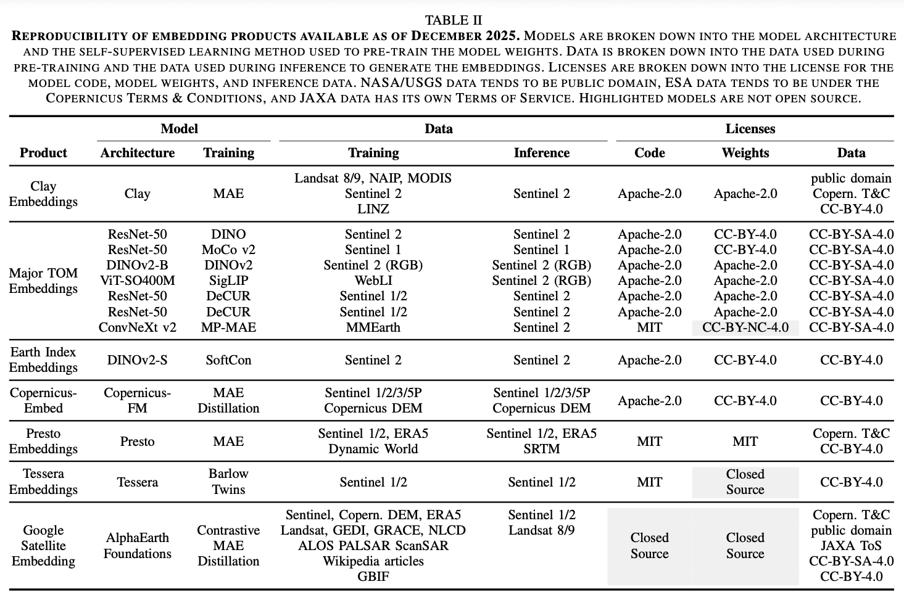

4 Earth Embeddings as Products
Taxonomy, Ecosystem, and Standardized Access
4.1 Información Básica
| Elemento | Detalle |
|---|---|
| Referencia corta | Fang et al. (2026) |
| Título completo | Earth Embeddings as Products: Taxonomy, Ecosystem, and Standardized Access |
| Revista / Volumen / DOI | arXiv preprint arXiv:2601.13134v1 (cs.SE), 2026 |
| Temática | Modelos fundacionales geoespaciales, estandarización de productos de embedding, observación de la Tierra |
| Contexto / Problema | El ecosistema de productos derivados de modelos fundacionales geoespaciales está fragmentado, carece de estandarización en formatos, resoluciones y licencias, dificultando su comparabilidad y uso reproducible. |
| Keywords | Earth embeddings, geospatial foundation models, TorchGeo, remote sensing, standardization |
4.2 Abstract
Original:
Geospatial Foundation Models (GFMs) provide powerful representations, but high compute costs hinder their widespread use. Pre-computed embedding data products offer a practical “frozen” alternative, yet they currently exist in a fragmented ecosystem of incompatible formats and resolutions. This lack of standardization creates an engineering bottleneck that prevents meaningful model comparison and reproducibility. We formalize this landscape through a three-layer taxonomy: Data, Tools, and Value. We survey existing products to identify interoperability barriers. To bridge this gap, we extend TorchGeo with a unified API that standardizes the loading and querying of diverse embedding products. By treating embeddings as first-class geospatial datasets, we decouple downstream analysis from model-specific engineering, providing a roadmap for more transparent and accessible Earth observation workflows.Traducción al español:
Los Modelos Fundacionales Geoespaciales (GFMs) ofrecen representaciones potentes, pero sus altos costos computacionales limitan su uso generalizado. Los productos de embedding precomputados constituyen una alternativa “congelada” más práctica, pero actualmente existen en un ecosistema fragmentado con formatos y resoluciones incompatibles. Esta falta de estandarización crea un cuello de botella ingenieril que impide comparaciones significativas entre modelos y su reproducibilidad. Formalizamos este panorama mediante una taxonomía de tres capas: Datos, Herramientas y Valor. Realizamos una revisión de productos existentes para identificar barreras de interoperabilidad. Para cerrar esta brecha, extendemos TorchGeo con una API unificada que estandariza la carga y consulta de diversos productos de embedding. Al tratar los embeddings como conjuntos de datos geoespaciales de primera clase, desacoplamos el análisis descendente de la ingeniería específica del modelo, proporcionando una hoja de ruta para flujos de trabajo más accesibles y transparentes en observación de la Tierra.
4.3 Preguntas de Investigación / Hipótesis
- ¿Cómo se puede estandarizar el acceso y uso de productos de embedding geoespaciales para facilitar su comparación y aplicación? (inferida)
- ¿Cuáles son las barreras actuales para la interoperabilidad y reproducibilidad en el ecosistema de Earth embeddings? (inferida)
4.4 Metodología
4.4.1 Flujo de trabajo
- Revisión del ecosistema actual de productos de Earth embeddings (7 casos).
- Clasificación mediante una taxonomía funcional: Datos, Herramientas y Valor.
- Comparación de propiedades técnicas: resolución, cobertura, licencia, arquitectura del modelo.
- Identificación de barreras operacionales.
- Integración en TorchGeo para estandarizar el acceso mediante una API unificada.

4.4.2 Modelos / Algoritmos
Revisión de productos basados en arquitecturas como ResNet-50, ViT, DINOv2, MAE, MoCo v2, Barlow Twins, entre otros, usando técnicas de autoaprendizaje como contraste, autoencoders enmascarados y distilación.
4.4.3 Datos
El análisis cubre productos de embedding precomputados derivados de datos satelitales como Sentinel (1/2/3/5P), Landsat, MODIS, NAIP, ERA5 y otros. Los productos varían en resolución espacial (desde 0.25° hasta 10 m), cobertura (global o países como Togo) y cobertura temporal (instantánea o series anuales desde 2015 hasta 2025).
| Tipo | Fuente | Cobertura temporal |
|---|---|---|
| Sentinel 1/2/3/5P | ESA (Copernicus) | 2015–2025 |
| Landsat 8/9 | NASA / USGS | 2018–2025 |
| ERA5 | ECMWF | 2019–2020 |
| NAIP, MODIS | USDA, NASA | N/A |
| Dynamic World, EuroCrops | Varios (Open data) | 2019–2025 |

4.4.4 Validación & Uncertainties
Se destacan los retos de reproducibilidad, incluyendo falta de mantenimiento en repositorios, formatos inconsistentes, y ausencia de benchmarks comunes. Se propone TorchGeo como solución integradora con soporte para múltiples modelos y datasets, permitiendo tareas como recuperación por similitud y mapeo.
| Métrica | Valor | Alcance | Notas |
|---|---|---|---|
| Compatibilidad API | Completa | TorchGeo | 7 productos integrados |
| Reproducibilidad | Limitada | General | Repos sin pruebas o documentación suficiente |
4.4.5 Replicabilidad & Recursos
| Ítem | Sí/No | Detalle |
|---|---|---|
| Código abierto | Parcial | Algunos modelos y códigos disponibles (TorchGeo, HuggingFace) |
| Datos abiertos | Sí | Sentinel, Landsat, ERA5, etc. |
| Repositorio activo | No | Muchos repositorios sin mantenimiento |

4.5 Resultados Clave
- Se clasifican los embeddings en tres tipos: por ubicación, por parche, y por píxel.
- Los embeddings recientes tienden hacia representaciones a nivel de píxel.
- Se integran 7 productos de embedding en TorchGeo con una API estandarizada.
- Se identifican tres barreras clave: distribución inconsistente, baja reproducibilidad, y dificultad para generar nuevos embeddings.
4.6 Discusión
- Contribuciones: Propuesta de taxonomía clara, revisión exhaustiva de productos existentes, y solución concreta de integración en TorchGeo.
- Limitaciones: Repositorios poco mantenidos, documentación parcial, falta de benchmarks unificados.
- Futuro: Ampliar comparación estandarizada en tareas temporales, incorporar más modelos y mejorar explicabilidad y cuantificación de incertidumbre.
4.7 Aplicabilidad en Chile
| Aspecto | Evaluación |
|---|---|
| Disponibilidad de datos base | Alta (Sentinel, Landsat, ERA5 disponibles) |
| Resolución espacial adecuada | Sí, hasta 10 m |
| Potencial para aplicaciones locales | Alto (agricultura, cobertura de suelo, planificación territorial) |
4.8 Madurez & Evidencia
| Eje | Nivel |
|---|---|
| TRL (Technology Readiness Level) | 6–7 (implementado y en integración) |
| Evidencia empírica | Media (estudio comparativo sin evaluación de desempeño directo) |
4.9 Impacto en Políticas Públicas / ODS
Este trabajo permite una mayor eficiencia y transparencia en aplicaciones de observación de la Tierra, facilitando la adopción de inteligencia artificial en la gestión ambiental, agricultura sostenible y monitoreo del cambio climático. Contribuye especialmente a los ODS 13 (Acción por el clima), 15 (Vida de ecosistemas terrestres) y 2 (Hambre cero).